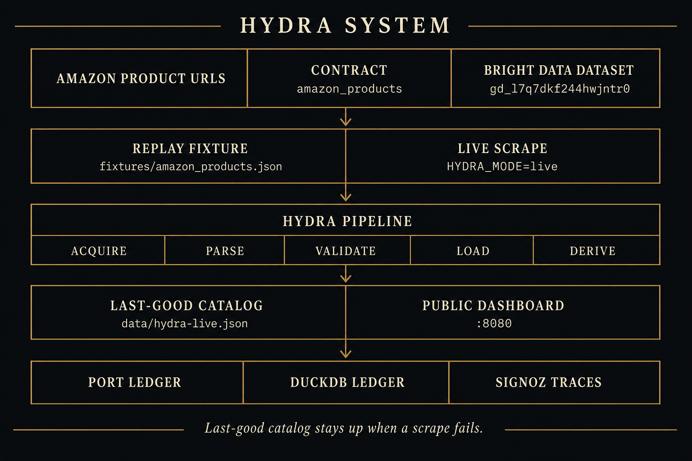
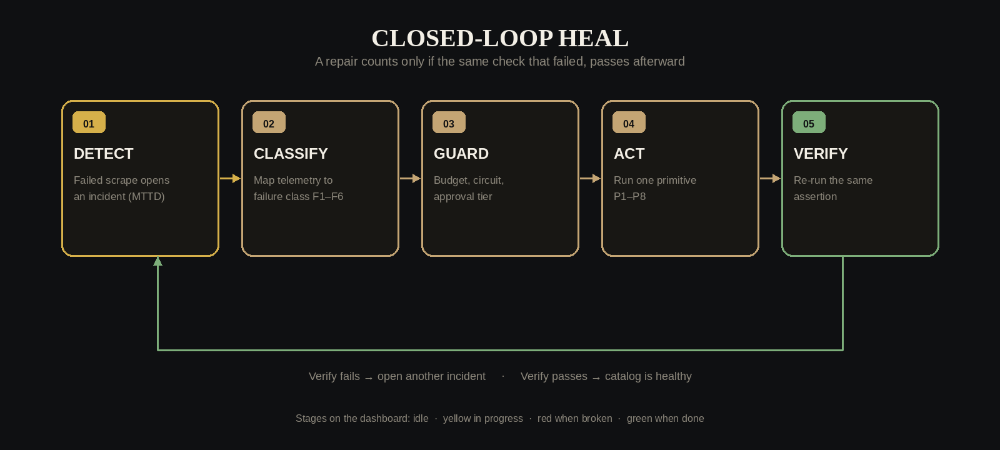
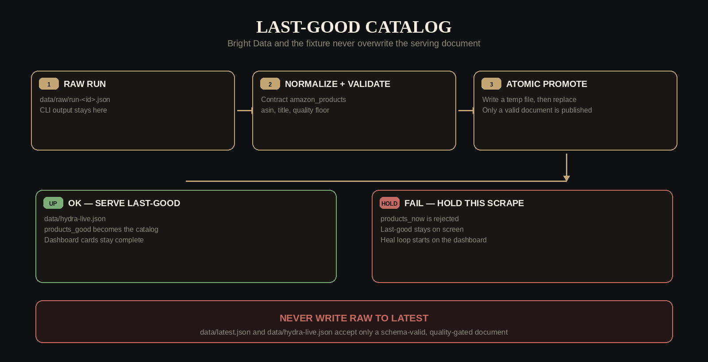
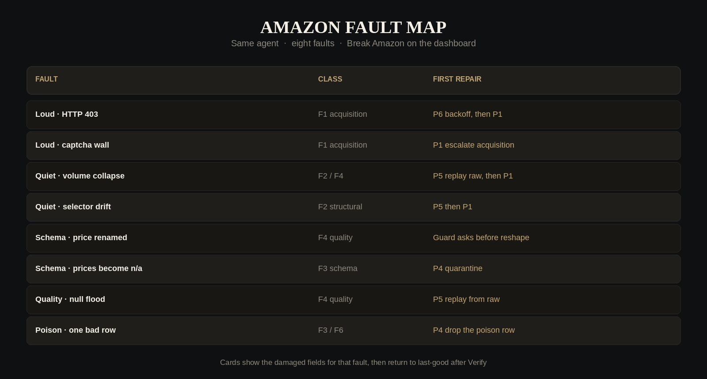

Full architecture, self-healing design, and operator brief
Sruthi Anuvalasetty · Ramachandra Nalam · 22 August 2026
Public dashboard: http://2.29.4.204:8080
Sruthi Anuvalasetty ·
Ramachandra Nalam
To make this a Google Doc. Download HYDRA-complete-brief.docx (this file includes the four architecture diagrams). In Google Drive: New → File upload → open the file → Open with Google Docs → File → Save as Google Docs.
One sentence. HYDRA keeps an Amazon product catalog on screen. When a scrape fails, shoppers still see the last good catalog while the agent finds the failure class, tries a bounded repair, and only publishes again after the same quality check that failed now passes.
Imagine a store window that must never go empty. A clerk goes to Amazon, copies the shelf, and only then updates the window. If Amazon slams the door, shows an “are you human?” page, or sends a half-empty box, the window still shows yesterday’s products. Customers never see a blank page.
Then a supervisor asks a simple question: was the door locked, was the box empty, or was one item rotten? It tries a bounded fix. Wait and try again. Use a stronger fetch. Rebuild from the last good box. Set aside the rotten item. It does not invent a softer test so it can declare victory. It re-runs the same checklist: enough products, every item has an ID and a title, prices are not mostly missing.
If the problem would change the shape of the catalog — a column renamed — it stops and asks a human. If the same problem happens three times in an hour, it stops on purpose so it cannot burn money all night.
That is what “self-healing” means here. Detect the break. Classify it. Stay safe. Act. Prove the original check now passes.
This is a team hackathon. The generic agent — six failure classes, eight repair primitives, a DuckDB ledger — is HYDRA. My product work is what judges actually see.
I turned a source-agnostic healer into one story: Amazon catalog reliability. When someone asks what I built, the honest sentence is this. I made the catalog stay up, and I made the heal loop visible.
| What I shipped | Why it matters |
|---|---|
| Amazon-only README and architecture diagrams | Judges see one story: the catalog stays up when the scrape breaks. |
| amazon_products contract and replay fixture | Bright Data dataset gd_l7q7dkf244hwjntr0. Required fields: asin, title. Quality floor: at least 5 products. |
| Public dashboard on port 8080; isolated live UI on 8081 | Break Amazon, then watch Detect → Classify → Guard → Act → Verify. Live cannot overwrite the judge page. |
| Last-good serving snapshot (data/hydra-live.json) | Raw Bright Data never writes the document the public page serves. |
| Port catalog import and control-plane entities | Writes hit a local ledger first. A Port login failure does not fail the pipeline. |
| Original factory invariants | Heal is triggered, not silent. Default mode is replay. Never promote a bad document. |
The agent is the engine. The Amazon page is the proof. I own the proof.
Built HYDRA, a self-healing data agent for Amazon catalog reliability, for a zero-downtime hackathon with Ramachandra Nalam.
External data breaks quietly. HTTP 200 with empty or wrong products is how bad catalogs ship. HYDRA never puts a raw scrape on the page. It classifies the failure, applies one of eight reversible repairs, and only publishes after the same quality check passes. Schema changes wait for a human. Repeated identical failures open a circuit so the agent cannot burn budget overnight.
I productized the agent onto a public Amazon dashboard: last-good catalog, a Break control that injects eight real faults, and a visible Detect → Verify loop. Default mode is replay, so the demo does not depend on venue wifi.
Live: http://2.29.4.204:8080
HYDRA is a self-healing Amazon catalog agent. When the scrape breaks, the last-good catalog stays up. The agent detects the failure, classifies it (F1–F6), guards the repair, acts with one of eight primitives (P1–P8), and verifies using the same assertion that failed. No Port login. No SigNoz login. Open the dashboard, choose a fault, click Break Amazon, watch Detect → Classify → Guard → Act → Verify.
Dashboard: http://2.29.4.204:8080
Authors: Sruthi Anuvalasetty · Ramachandra Nalam
HYDRA is pointed at one source for the demo: Amazon products. The catalog on the dashboard is real Amazon-shaped rows — ASIN, title, price, availability. Replay means we are not calling Bright Data on every tick, so the demo does not depend on venue wifi.
| Piece | Value |
|---|---|
| Source | amazon_products |
| Contract | contracts/amazon_products.json |
| Replay fixture | fixtures/amazon_products.json |
| Bright Data dataset | gd_l7q7dkf244hwjntr0 |
| Collection | hl_bbd9eb9a |
| Serving snapshot | data/hydra-live.json |
| Required fields | asin, title |
| Quality floor | at least 5 products |
| Default mode | HYDRA_MODE=replay |
| Operator action | What happens |
|---|---|
| scrape | Acquire → parse → validate → load. Promote only if assertions pass. |
| break --fault … | Arm one of eight runtime faults. No code edit. |
| heal | One detect-and-repair sweep. |
| Dashboard Break Amazon | Same as break plus the watch loop: scrape, hold last-good, then heal. |
| approve | Unlock a Tier 2 repair (schema change or failover). |
| reset-circuit | Close an open circuit after the agent gave up. |
| status | Source health plus MTTD, MTTA, MTTR, heal success. |
Replay uses the fixture. You do not need a Bright Data key for the demo. Live calls the dataset API and is isolated on port 8081 so it cannot overwrite the judge page.
Three planes. One invariant. The data plane acquires and quality-gates rows. The control plane classifies and repairs. The memory plane records what happened and can refuse a dangerous repair. The invariant: a raw scrape never becomes the serving document.
Bright Data or the fixture → Acquire → Parse → Validate → Load DuckDB → hydra-live.json → dashboard. Validation is SQL assertions on the contract, not “HTTP 200 means success.” Quiet failures — too few rows, null prices — are first-class.
Detect → Classify (F1–F6) → Propose a playbook → Guard → Act (P1–P8) → Verify → Learn. Sources are contracts (JSON). Failures are classes. Repairs are primitives. Adding a source is a JSON file, not a new handler. No Amazon-specific if-statements in the healer.
DuckDB (hydra.duckdb) is the system of record: raw snapshots, runs, incidents, heal ledger. Port mirrors incidents and heals, best effort. Local ledger first. SigNoz is optional sight. OpenTelemetry export failures are swallowed after a three-second timeout.

Heal is triggered, not silent. The dashboard watch loop scrapes, then heals only if that run failed. There is no silent auto-heal on a healthy feed. A repair is only a heal if the same assertion that failed, passes afterward.

Code: hydra/agent/detector.py. Three evidence sources, then one incident per source.
Code: hydra/agent/classifier.py. First match wins. Inputs are telemetry, not “this is Amazon.”
| If this is true | Class |
|---|---|
| No success inside the freshness SLO | F5 Freshness |
| Acquire error, HTTP ≥ 400, timeout, captcha, or empty body | F1 Acquisition |
| Zero rows, or fewer than half of last-good volume | F2 Structural drift |
| Schema errors | F3 Contract violation |
| Load error, poison, or conversion error | F6 Poison pill |
| Everything else — null flood, distribution | F4 Statistical anomaly |
A fingerprint is a hash of class + source + stage + error + failed assertions. The same fingerprint three times in an hour is treated as structural, not transient.
Code: hydra/agent/proposer.py and playbooks.yaml. Each class has an ordered list of primitives. If this fingerprint healed before, that primitive is tried first. Every playbook ends in P8 — give up and open the circuit.
Loud 403 (F1): P6 backoff → P1 climb the ladder → P1 again → P7 failover → P8 stop.
Volume collapse (F2 / F4): P5 replay last-good raw → P1 stronger fetch → P2 resynthesize extractor → P8.
Code: hydra/agent/guard.py. This is the difference between a retry script and a system you can leave running.
| Rule | Default |
|---|---|
| Circuit is open | Refuse until reset-circuit |
| Heal budget per source per hour | 5, then refuse |
| Same fingerprint in one hour | 3 times → force P8 |
| Attempts on this incident | 4, then force P8 |
| Primitive tier 2 or above | Ask a human before changing schema or failing over |
| Verification | Required. No verify, no success. |
| ID | What it does | Tier | Reversible |
|---|---|---|---|
| P6 | Wait, then retry | 0 | Yes |
| P1 | Advance one rung on the acquisition ladder (dataset → markdown → HTML) | 1 | Yes |
| P5 | Rebuild derived tables from the last-good raw snapshot. No re-fetch. | 0 | Yes |
| P2 | Infer a new extractor. Must reproduce known-good historical snapshots. | 1 | Yes |
| P4 | Drop bad rows to a dead-letter table. Commit the rest. | 1 | Yes |
| P3 | Additive schema or field aliases | 2 — ask first | Gated |
| P7 | Search for an alternate URL | 2 — ask first | Gated |
| P8 | Open the circuit and escalate to a human | 3 | Stop |
P2 does not grade its own homework. A candidate extractor must replay historical snapshots that already have expected_rows. If it cannot reproduce them, it is discarded.
Code: hydra/agent/verifier.py. Re-run the same failing assertion IDs. No softer substitute check. If verify fails and the primitive was reversible, the contract patch is rolled back and the next primitive runs.
Heal success on the scoreboard is incidents healed divided by incidents finished. Backoff then a verified P1 is one healed incident, not two.
On verified success, DuckDB — and Port if configured — stores fingerprint → primitive. The next identical failure skips the wasted first steps.
Serving is split on purpose. The public page never reads Bright Data output. It reads data/hydra-live.json, which keeps products_good when products_now is bad.
So a 403 looks like this. The ribbon says BROKE. Cards are dimmed but still there. The loop walks Detect → Verify. The pill returns to Healthy.

| Class | Name | Signature | Typical repair |
|---|---|---|---|
| F1 | Acquisition | 403, timeout, captcha, empty body | P6 then P1 |
| F2 | Structural drift | Fetch OK, zero or half the rows | P5 then P1 or P2 |
| F3 | Contract violation | Rows exist, schema fails | P4 then P3 (Tier 2) |
| F4 | Statistical anomaly | Schema OK, distribution wrong | P5 then P1 |
| F5 | Freshness | No success inside the SLO | P6 then P1 |
| F6 | Poison pill | One row kills the batch | P4 quarantine |
Every fault is a runtime flag. ChaosInjector.apply() mutates the payload — or raises 403 — after the fixture or live fetch.
| Fault | What judges see | Class |
|---|---|---|
| Loud · HTTP 403 | Scrape blocked. Cards stay last-good. | F1 |
| Loud · captcha wall | Human-check HTML, not products. | F1 |
| Quiet · volume collapse | HTTP 200, too few products. | F2 / F4 |
| Quiet · selector drift | Zero products extracted. | F2 |
| Schema · price renamed | Price field gone. Guard asks. | F3 |
| Schema · prices become n/a | Type errors. Bad rows held back. | F3 |
| Quality · null flood | Most prices empty. | F4 |
| Poison · one bad row | One product corrupts the batch. | F3 / F6 |

Composition root is HydraApp in hydra/factory.py. One lock serializes ingest and heal so the dashboard and the CLI cannot race. The Amazon contract is the source, not Python.
Acquisition ladder: scrape_dataset → fetch_markdown → fetch_html. Extraction: json_records plus field aliases. Schema: required asin and title. Assertions: at least 5 rows; ASIN and title not null; in-stock price null rate under 25 percent; no duplicate ASINs. Healing: max autonomy tier 2, budget 5 per hour.
The watch loop (make hydra-dashboard) ingests every 3 seconds. On failure it holds 3.5 seconds so judges can see BROKE, then heals, then resets the acquisition rung.
| DuckDB table | Purpose |
|---|---|
| raw_snapshot | Append-only raw payload, hash, rung, expected_rows for P2. |
| pipeline_run | One ingest: status, rows, error_type, trace_id. |
| assertion_result | Each SQL check, pass or fail. |
| dead_letter | Quarantined poison or schema rows. |
| incident | Opened on detect; closed healed, escalated, or blocked. |
| heal_ledger | One primitive attempt plus verification_passed. |
| heal_pattern | Fingerprint to successful primitive. |
| source_state | health, circuit_state, current_rung. |
| pending_approval | Tier 2 gate for schema change or failover. |
capabilities.yaml binds logical names to MCP tools. Business logic never calls a raw tool name. Replay mode never needs Port, SigNoz, or Bright Data to be reachable.
SPEC.md and the Hacker News digest are still in the repository. HYDRA sits beside that factory. HYDRA does not write data/latest.json. The public product is the Amazon dashboard.
Rehearse this three times. One break at a time. Wait for Healthy before the next. Default mode is replay. You do not need a Bright Data key.
Open http://2.29.4.204:8080. Names under the title are LinkedIn links. Catalog is healthy. Ten Amazon products.
Say: “This is a live Amazon catalog. The page is serving last-good data, not a raw scrape. I am about to break the scrape on purpose.”
Open the Break dropdown. Choose Loud · HTTP 403. Click Break Amazon. Ribbon says BROKE. Cards stay on screen, dimmed. Loop walks Detect → Classify → Guard → Act → Verify. Pill returns to Healthy.
Say: “Detected as F1, acquisition failure. It backed off, then climbed the acquisition ladder. Two attempts, both recorded. Heal success counts this as one incident, not two.”
Wait until Healthy. Choose Quiet · volume collapse. Click Break Amazon.
Say: “This is the failure that actually costs money. The scrape returns HTTP 200. A naive pipeline would ship three products and call it success. The row-count assertion caught it.”
Choose Schema · price renamed. Click Break Amazon.
Say: “Schema change. The agent is not allowed to do this alone. Tier 2 stops and asks. An agent that can change your schema at 3 a.m. without asking is not a feature.”
Hover any scoreboard tile. Read MTTD, MTTA, MTTR, heal success, false-heal rate, autonomy.
Say: “We track false heals, because an agent that claims success without verifying is worse than no agent. Same agent. Same eight primitives. The demo source is Amazon. The healer is not Amazon-specific.”
| If this happens | Do this |
|---|---|
| Loop freezes on Guard | Designed, not a hang. Click Reset circuit, then Break again. |
| Venue wifi dies | You are already on replay. Do not switch to live. |
| Live fetch is requested | Use port 8081 only. Do not touch 8080. |
| Same 403 repeats | Fingerprint escalation opened the circuit. Reset, then continue. |
| Everything breaks | This document. Do not write code on stage. |
| Metric | Definition | How to say it |
|---|---|---|
| MTTD | Detection time minus fault injection time | How fast we noticed. |
| MTTA | First heal attempt minus detection | How fast we started a repair. |
| MTTR | Resolution minus detection | How fast the original checklist went green. |
| Heal success | Incidents healed / incidents finished | Not every ladder step. One incident, one score. |
| False-heal rate | Marked success, then the same fingerprint fails again | We measure our own lies. |
| Autonomy | Verified heals with no human approver | Most classes do not need a person. |
make hydra-test
make hydra-dashboard # replay UI on :8080
make hydra-dashboard-live # live UI on :8081
python3 -m hydra scrape|break|heal|status|approve|reset-circuit|dashboard
External data breaks constantly, quietly, and differently every time. Retries are not healing. HYDRA makes sources declarative and failures categorical. Repairs bind to classes, never to sources, so healing generalizes. The page never goes blank. The agent knows when to stop, asks before it changes your schema, and reports its own false-heal rate.